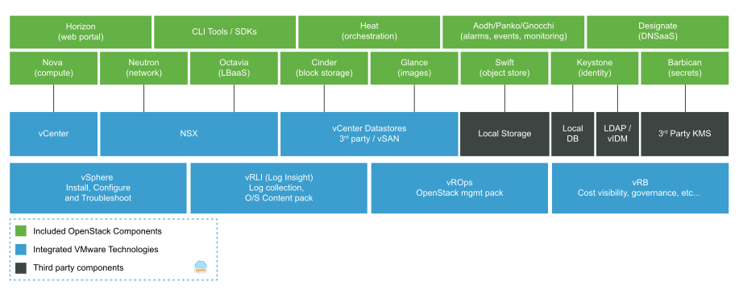

请访问原文链接：VMware Integrated OpenStack 7.3 - VMware 支持的 OpenStack 发行版 查看最新版。原创作品，转载请保留出处。
作者主页：sysin.org
VMware Integrated OpenStack 7.3 | 2023 年 6 月 15 日 | 内部版本 OVA 21849205, 修补程序 21849206
VMware Integrated OpenStack 7.2 | 2021 年 12 月 16 日 | 内部版本 OVA 19066814，修补程序 19066815
VMware Integrated OpenStack 7.1 | 2021 年 5 月 13 日 | 内部版本 OVA 17987092，修补程序 17987093
VMware Integrated OpenStack 7.0 | 2020 年 6 月 4 日| 内部版本 16227912
简介
VMware Integrated OpenStack 是一款 VMware 支持的 OpenStack 发行版软件，可方便用户基于 VMware 虚拟化技术轻松运行企业级 OpenStack 云环境。VMware Integrated OpenStack 非常适合许多不同的使用情形，包括构建 IaaS 平台、为开发人员提供标准 OpenStack API 访问、利用边缘计算 (sysin)，以及在 OpenStack 上部署 NFV 服务。

使用情形
企业 IaaS 平台/开发人员云环境
通过标准 OpenStack API 提供基础架构资源的自服务和可编程调配，可提高开发人员的工作效率。借助 VMware Integrated OpenStack，开发人员可获得两全其美的解决方案 - 公有云式用户体验以及他们在最成熟的基础架构上所需的 API。
从数据中心到边缘
利用边缘计算进行实时数据收集和分析。通过基于 VMware Integrated OpenStack 和自定义应用在远程位置构建微型数据中心，组织可以实时了解相关情况并采取相应的行动 (sysin)，从而减少需要传输到集中式数据中心的数据量。
通过 VMware NSX 实现的高级网络虚拟化
使用 VMware NSX 部署 VMware Integrated OpenStack，可提供高级安全和网络虚拟化功能，例如适用于您的关键业务工作负载的防火墙和微分段。
面向 CSP 的 NFV 云
借助 VMware Integrated OpenStack 构建基于 OpenStack 的网络虚拟化功能 (NFV)。对于希望构建具备 NFV 客户所需的特定功能和关键功能的 NFV 云的通信服务提供商 (CSP) 而言，VMware Integrated OpenStack 可谓是理想的平台。
功能特性
基于 OpenStack 的 Train 版本
使用最新的 OpenStack 版本可充分利用最新的上游功能。
精简 OpenStack 部署
基于 VMware SDDC，20 分钟内即可完成标准 OpenStack 云环境的部署。使用 VMware vSphere Web Client，只需一个 OVA 文件即可轻松部署 VMware Integrated OpenStack。在几乎不中断的情况下执行修补和升级。
一流基础架构
借助 VMware SDCC，可充分利用 VMware vSphere、VMware NSX 和 VMware vSAN 提供的高级企业和生产就绪特性及功能。亲自体验各种优势，例如改进的安全性、高可用性、简化的维护和灾难恢复。
集成式运维和管理
即时可用的 vRealize Operations、vRealize Log Insight 和 vRealize Automation 集成可精简诸如运行状况检查、故障排除和容量管理等运维，还可监管和控制用户管理、基于角色的访问控制 (RBAC)、配额等。
VMware Integrated OpenStack“全包式”
基于 VMware Integrated OpenStack 和您的应用构建占用空间较小、恢复能力极强的微型数据中心，并将其发送到远程位置以进行实时数据收集和分析。客户将通过自动化、API 驱动的编排和生命周期管理完全控制这些微型数据中心和应用。通过利用边缘计算中的虚拟 GPU 功能获得竞争优势，以应对各种使用情形，如公用事业、石油和天然气钻井平台、销售点、安保摄像头、制造工厂和面向电信的使用情形。
集成式容器编排和管理支持
基于 OpenStack，使用多租户和持久性卷在生产环境中运行容器化应用。
高级 NFV 功能
面向希望基于 Integrated OpenStack Carrier Edition 构建 NFV 云的通信服务提供商提供的高级特性与功能。
技术规格
NSX-V 组件
如果使用 Integrated OpenStack 部署 NSX-V 组件，则这些组件需要更多的 CPU、RAM 和磁盘空间。
- 虚拟机：4 个
- CPU：16 个
- RAM：24 GB
- 磁盘空间：120 GB
（注意：不包括可选的 Edge 要求。）
软件
对于 NSX-V 部署：
- vSphere VC 6.0 Enterprise Plus 或更高版本
- ESXi 主机版本 5.5 Update 2 及更高版本
对于 NSX-T 部署：
- vSphere VC 6.5 U1 及更高版本
- ESXi 主机版本 6.5 U1 及更高版本
部署模式
VMware Integrated OpenStack 提供三种部署模式。高可用性 (HA) 模式、紧凑模式和 VIO-in-a-Box。
新增功能
关于 VMware Integrated OpenStack
VMware Integrated OpenStack 通过简化集成过程，极大地精简了 OpenStack 云基础架构部署。VMware Integrated OpenStack 通过在 vCenter Server 中作为虚拟设备运行的部署管理器提供即时可用的 OpenStack 功能和简单的配置工作流。
7.3 新增功能
VMware Integrated OpenStack 7.3 引入了以下主要功能和增强功能：
- 支持 vSphere 8.0U1：帮助创建基于 vCenter 8.0 基础架构的工作负载。
- 支持 NSX 4.1：有助于利用 NSX 中支持的新功能。
- 向后兼容性：虽然 VMware Integrated OpenStack 7.3 支持最新版本的 vSphere 和 NSX（vSphere 8.0U1 和 NSX 4.1），但您可以在 VIM 层将 VMware Integrated OpenStack 升级到 7.3 (sysin)，并继续使用早期版本的 vSphere 和 NSX（例如、vSphere 7.0.x 和 NSX 3.2.x）。
- 虚拟超线程：当实例的延迟敏感度设置为“高超线程”时，VMware Integrated OpenStack 可以利用 vSphere 8.0 中支持的虚拟超线程功能。
- 附加功能：
- 用于实时迁移由 VMware Integrated OpenStack 管理的虚拟机的存储迁移选项。
- Cinder 卷备份改进，删除了用于备份 cinder 卷的缓存。
- 支持在反亲和服务器组中部署具有 SR-IOV 端口的实例。请注意，在这种情况下，该服务器组中的所有实例都应具有 SR-IOV 端口。
- B&R增强：支持“Not-Running”部署模式下的备份。
7.2 新增功能
支持最新版本的 VMware 产品：
- VMware Integrated OpenStack 7.2 与 VMware vSphere 7.0 U2、NSX-T 3.2 和 NSX-V 6.4.11 完全兼容。
新功能和增强功能：
- 管理平面：
- 支持对 VIO 部署的 Neutron 执行 NSX-V 到 NSX-T 迁移：VMware NSX Data Center for vSphere 6.4.x 的标准技术支持有效期将于 2022 年 1 月 16 日到期。此版本增加了将现有 VIO 部署的 Neutron 从 NSX-V 迁移到 NSX-T 的功能。NSX-T 需要使用 3.2 或更高版本。
- 支持导入虚拟机功能增强功能：在具有 NSX-T Data Center 网络连接的部署中 (sysin)，VIO 可以导入具有多个 vNIC 的虚拟机，为非根磁盘指定卷类型，并将其与自定义特定实例相关联。
- 支持灾难恢复增强功能：为管理平面恢复提供 UI 支持，并在恢复后自动更新某些 NSX 资源。它还支持使用多个 vCenter 部署 VIO。
- 支持 VIOCLI 增强功能：可帮助执行多个 vCenter 部署的操作，包括卷迁移命令和实例/虚拟机操作命令。
- 支持新的运行状况检查工具：VIO 管理员可以使用 viocli 命令检查 VIO 系统的运行状况。有关更多信息，请参见 VIO 7.2 管理指南。
- 支持 VIO Web UI 改进：VIO 管理员可以直接从 VIO Web UI 备份或还原部署。在上一版本中，管理员只能使用 viocli 命令执行此操作。
- 支持一次性修补程序管理：在此版本中，我们通过 viocli 命令为一次性修补程序提供统一的管理工具。所有一次性修补程序都通过 viocli 命令执行基本安装/卸载过程并列出状态。
- 支持 VIO 修补程序增强功能：在启动修补程序之前提供自动先决条件检查。还可以在修补程序安装期间跟踪进度。
- OpenStack 驱动程序：
- 使用多个 SR-IOV 配置虚拟机 vNIC 连接：提供通用方法以在指定的 SR-IOV pNic 上连接 VNF，同时在 NUMA 节点对齐下放置虚拟机。
- 支持租户 VDC 增强功能：管理员可以迁移租户 VDC 中的虚拟机。还支持重命名租户 VDC。
- 为 Nova 实例支持多个 vGPU 配置文件：您可以使用 nova-manage 命令在 vCenter Server 下显示和更新 vGPU 信息。
- 管理平面：
7.1 新增功能
- 支持最新版本的 VMware 产品：
- VMware Integrated OpenStack 7.1 与 VMware vSphere 7.0 U2、NSX-T 3.1.1 和 NSX-V 6.4.10 完全兼容。
- 新功能和增强功能：
- 管理平面：
- 支持对 VIO 管理平面进行灾难恢复。提供了新的 viocli 命令，支持管理平面从灾难进行恢复。完整的灾难恢复过程通过 SRM、vSphere Replication 和 NSX-T 多站点功能进行了验证，涵盖 Nova 实例、Cinder 卷和 Neutron 网络。在目标 DR 站点中恢复部署后，用户可以使用 VIO 管理恢复的 Nova/Cinder/Neutron 对象。
- 支持将 Neutron NSX-T Management Plugin 迁移到 Policy Plugin。
- 支持多个许可证密钥：允许管理员输入多个 VIO 许可证密钥并分配要使用的密钥。
- OpenStack 驱动程序：
- 支持 Octavia 特定实例。通过该功能，用户可以在 NSX-T 上的 VIO 创建的负载均衡器上使用 OpenStack Octavia 特定实例功能。Neutron NSX-P 插件以及 NSX-T 3.1 或更高版本支持此功能。
- 可扩展性：
- 支持更大的可扩展性。现在，一个 VIO 部署可以支持多达 128 个 Nova 计算节点，使用 Neutron NSX-T Policy Plugin 时支持多达 1 万个租户网络，使用 vIDM 作为 IdP 时支持多达 8 个 VIO 部署联合。
- 管理平面：
- 支持最新版本的 VMware 产品：
7.0 新增功能
OpenStack Train：VMware Integrated OpenStack 7.0 基于 OpenStack 的 Train 版本
支持最新版本的 VMware 产品：VMware Integrated OpenStack 7.0 支持且完全兼容 VMware vSphere 7.0 和 NSX-T Data Center 3.0。
OpenStack 功能：
- 对 Nova 服务器实例支持有选择性地固定 vCPU。可以将一部分 vCPU 固定到物理 CPU 内核。此功能需要 vSphere 7.0 或更高版本。
- 支持 SR-IOV 网卡冗余，可实现网络连接 HA，从而允许从不同的 pNIC 调度 vNIC 置备。
- 支持 Neutron 中继服务，从而允许使用单个虚拟网卡 (vNIC) 将多个网络连接到一个实例。通过将实例连接到单个端口，可以为该实例提供多个网络。有关如何使用中继服务的信息，请参见 OpenStack 社区中的文档。此功能需要使用 Neutron Policy 插件。
- 支持 Octavia LBaaS，此版本已集成 OpenStack Octavia 项目。
- 对具有 IPv6 成员的 Octavia LBaaS 支持 IPv6，此功能需要 NSX-T 3.0 或更高版本以及 Neutron Policy 插件。
- 支持将 NSX-T vRF-lite 作为外部网络，此功能需要 NSX-T 3.0 或更高版本以及 Neutron Policy 插件。
- 在 VDS 7.0 上支持 NSX-T，此功能需要 vSphere 7.0 或更高版本以及 NSX-T 3.0 或更高版本。
控制层面增强功能：
- 修补程序管理：内置修补功能，无需使用蓝/绿升级过程
- 公共 API：用于管理 VMware Integrated OpenStack 7.0 部署的 API
- Python 3：VMware Integrated OpenStack 7.0 现已完全使用 Python 3 编写
- 命令行：改进了 viocli 命令行实用程序
- 稳定性和性能改进
许可模式：
- 在 VIO 7.0 中，Data Center Edition 已与 Carrier Edition 合并。Carrier Edition 可以购买，且包括所有功能。Data Center Edition 不再上市出售。对升级到 VIO 7.0 没有任何影响。有关详细信息，请参阅 KB79285。
下载地址
VMware Integrated OpenStack 7.0.0：
百度网盘链接：
[EoD]VMware Integrated OpenStack Virtual Appliance 7.0.0
File size: 5.78 GB
Name: VIO-Appliance-7.0.0.0-16227912_OVF10.ova
Release Date: 2020-06-04
VMware Integrated OpenStack Virtual Appliance 7.0.0
VMware Integrated OpenStack is VMware’s OpenStack distribution that is optimized and tested to run on VMware SDDC, providing API access to best of breed infrastructure. It quickly deploys on top of VMware SDDC for an OpenStack experience familiar to VMware administrators.
SHA256SUM: 7db572624b7c4716297f031af0d5fd25427fab7979f23b9c21281c2156cde12dVMware Integrated OpenStack 7.0.0 Upgrade
File size: 9.72 MB
Name: vio-upgrade-7.0-16227912.tar.gz
Release Date: 2020-06-04
VMware Integrated OpenStack 7.0.0 Upgrade
SHA256SUM: 0042bb24b84c8334553385ab480fac8695be7ecf9af74211abdd80d65765f2ce
VMware Integrated OpenStack 7.1.0：
百度网盘链接：
[EoD]VMware Integrated OpenStack Virtual Appliance 7.1.0
File size: 6.65 GB
Name: VIO-Appliance-7.1.0.0-17987092_OVF10.ova
Release Date: 2021-05-13
VMware Integrated OpenStack Virtual Appliance 7.1.0
SHA256SUM: 29748af73577f43093d5ecacc933cce3583d49f6ed5bd5e7d051fdf08f01091dVMware Integrated OpenStack 7.1.0 Patch Package
File size: 2.90 GB
Name: vio-patch-7.1.0.0-17987093.tar.gz
Release Date: 2021-05-13
VMware Integrated OpenStack 7.1.0 Patch Package
SHA256SUM: 10c724492fa316255abd7d3a7af24b02c9a0b4590b9c407cd25acef14b95dfe3
VMware Integrated OpenStack 7.2.0：
百度网盘链接：
[EoD]VMware Integrated OpenStack Virtual Appliance 7.2.0
File size: 7.45 GB
Name: VIO-Appliance-7.2.0.0-19066814_OVF10.ova
Release Date: 2021-12-16
SHA256SUM: e45fb8ca5e8498ea2286a769b9eefaf9648c2f5a611a9a77d83bce22111229f3VMware Integrated OpenStack 7.2.0 Patch Package
File size: 3.57 GB
Name: vio-patch-7.2.0.0-19066815.tar.gz
Release Date: 2021-12-16
SHA256SUM: 407e018807aacece85ff0db8a5949289666ceec2be32ccd05503fc972d5ef563VMware Integrated OpenStack 7.2.0 NSX-V to NSX-T Migrator
File size: 627.69 KB
Name: nsx-migrator-7.2.0.0-19066815.tar.gz
Release Date: 2021-12-16
SHA256SUM: c10d459c002a7b12329ec8b24cf5df031107af425e85f52e615a502c489cab11
VMware Integrated OpenStack 7.3.0：
百度网盘链接：https://pan.baidu.com/s/1BfLTrW7LDeuzJvAmEcmAHw?pwd=?<专享>
通过捐赠下载此版本：点击 💙支付宝 或者 💚微信支付，扫码备注邮箱（用于识别注册用户，忘记备注请提供时间），
评论区留言指定版本（默认当前最新版），在其他平台留言恕无法处理。提示：捐赠或赞赏属于自愿赠予行为，提交后即表示您对作者的支持与认可。为避免误操作，请在确认前仔细检查金额，支付完成后将无法撤销或退还。
File info
VMware Integrated OpenStack Virtual Appliance 7.3.0
File size: 6.67 GB
Name: VIO-Appliance-7.3.0.0-21849205_OVF10.ova
Release Date: 2023-06-15
SHA256SUM: 53f9121cda143d5b51242884172dc9f3a61516e2e69bf95373aa2fe074c728edVMware Integrated OpenStack 7.3.0 Patch Package
File size: 3.58 GB
Name: vio-patch-7.3.0.0-21849206.tar.gz
Release Date: 2023-06-15
SHA256SUM: 0a885e8d5f4c16ddda79b734ffe86b3d6e025817dcf39db58d278ade76697d3fVMware Integrated OpenStack 7.3.0 NSX-V to NSX-T Migrator
File size: 666.08 KB
Name: nsx-migrator-7.3.0.0-21849205.tar.gz
Release Date: 2023-06-15
SHA256SUM: 545c4e3befc95987911f31e43c5cd64f73d69c339a917df36e9e28ff44b0671f
兼容性
VMware Integrated OpenStack 与 vSphere 互操作性：

VMware Integrated OpenStack 与 NSX 互操作性：


文章用于推荐和分享优秀的软件产品及其相关技术，所有软件默认提供官方原版（免费版或试用版），免费分享。对于部分产品笔者加入了自己的理解和分析，方便学习和研究使用。任何内容若侵犯了您的版权，请联系作者删除。如果您喜欢这篇文章或者觉得它对您有所帮助，或者发现有不当之处，欢迎您发表评论，也欢迎您分享这个网站，或者赞赏一下作者，谢谢！
 支付宝赞赏
支付宝赞赏  微信赞赏
微信赞赏赞赏一下
敬请注册！点击 “登录” - “用户注册”（已知不支持 21.cn/189.cn 邮箱）。 请勿使用联合登录（已关闭）。